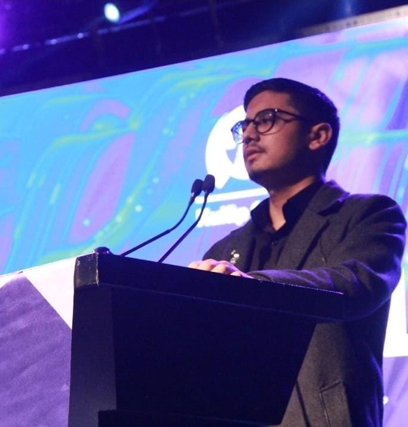

Portfolyoma Hoşgeldiniz

assets/profile.jpgÖğrenci • Öğretmen • Asistan • Araştırmacı • Proje Danışmanı • Mentör • E-Sporcu
Yazılım, Robotik, Otomasyon, Gömülü Sistemler, Yapay Zeka, 3D Modelleme, Tarih, Jeoloji ve Coğrafya, Din ve Dinler Tarihi, Felsefe ve Düşünce Biçimi, Şiir ve Hikâye Yazımı, Astronomi, Kuantum Fiziği, Uzay-Zaman, Moleküler Genetik, Oyun ve Animasyon, Anatomi, Kimya ve Atom Yapısı.
Merhaba, ben Umuthan Yalçınkaya (Umut Pasha / .exe). Mühendislik, yazılım, otonom sistemler ve organizasyon yönetimini aynı anda yürüten; yalnızca bireysel proje üretmeyi değil, aynı zamanda ekip ve yapı kurmayı hedefleyen çok disiplinli bir geliştiriciyim. Benim için “proje” yalnızca bir sunum ya da çizim değil; fikirden sahaya, sahadan ölçüme, ölçümden iyileştirmeye giden döngüdür.
Küçük yaşlardan itibaren robotik ve bilime karşı aşırı yüksek bir merakım vardı. Henüz 9 yaşımdayken Kocaeli’de düzenlenen Darobotica robotik yarışmasına dört dalda dört robotla katıldım; üç birincilik ve bir ikincilik alarak erken yaşta “sahada üretme” kültürüyle tanıştım. O dönemden beri beni asıl motive eden şey; karmaşık görünen işleri basitleştirip çalışır hale getirmek ve bunu bir ekip kültürüyle çoğaltmaktı.
8. sınıfta kimyaya olan ilgim ve eğitim sürecimle TEKNOFEST’te “En Verimli Roket Yakıtı” alanında birincilik başarısı elde ettim. 14 yaşımda TÜBİTAK çatısı altında araştırma disiplinini öğrenmeye başladım. Aynı yıllarda FRC takımı Techno-Rob’da programmer olarak görev aldım. İki sezon üst üste katıldığımız FRC süreci bana; takım içi rol paylaşımı, kriz yönetimi, test kültürü ve yarışma stresinde doğru karar verme becerisi kazandırdı.
16 yaşımda KodeLig ve hackathonlarda üst üste birincilikler aldım. 17 yaşımda ise alt sınıflardan oluşan ekipleri yetiştirmeye odaklandım; mentörlük verdiğim takımlar toplamda dokuz ekip ve on iki kupa gibi güçlü bir başarı yakaladı. Bu süreçte “tek kişinin parlaması” yerine, ekiplerin birlikte büyümesinin daha kalıcı olduğunu net şekilde gördüm.
18 yaşımda “Geri Dönüştürülmüş Malzemelerden Elektrikli Araba” projesini hayata geçirdim ve neredeyse sıfır maliyetle çalışır bir elektrikli araç inşa ettim. Bu proje TEKNOFEST’te bağımsız projeler tarafında ikincilik getirdi. Bu başarıdan sonra odağımı; elektrikli araçlar, enerji sistemleri, kontrol ve otonom sürüş konseptlerine daha da güçlendirdim.
Üniversite sürecinde yalnızca ders odaklı kalmak yerine, üretim ve eğitim kültürünü kurum içinde de büyütmeye çalıştım. Marmara Üniversitesi’nde DIOT (Dijital İkiz ve Otonom Teknolojiler) yapılanmasını; eğitim veren, proje üreten ve yarışmalara hazırlayan aktif bir üretim alanı mantığıyla yönettim. Aynı dönemde üniversite idaresinden gelen asistan öğrenci teklifini kabul ederek laboratuvar dersleri ve öğrenci projelerinde uygulamalı destek verdim.
E-spor tarafında ise 15 yıllık Counter-Strike serüvenimin son yıllarında profesyonel seviyede takım disiplinini yaşadım. Bu taraf bana; strateji, refleks, iletişim, antrenman düzeni ve stres altında net karar verme gibi özellikler kazandırdı. Bugün mühendislikte takım yönetimi yaparken bu “disiplin kültürü”nü birebir kullanıyorum.
Son yıllarda odaklandığım en büyük yapı ise Simurg Öğrenci Federasyonu. Simurg’u; tek bir takım değil, birçok takımın birlikte büyüyebildiği, Ar-Ge üretebildiği, yurtiçi/yurtdışı fırsatlar oluşturabildiği ve öğrenciyi gerçek kariyer çizgisine taşıyabildiği bir ekosistem olarak kurguladım. Kısacası: sadece yarışmaya giden ekip değil; geleceğe öğrenci hazırlayan bir üretim federasyonu.
Simurg Öğrenci Federasyonu; mühendislik, teknoloji ve inovasyon alanlarında faaliyet gösteren öğrenci takımlarını tek bir çatı altında toplayarak disiplinler arası iş birliğini güçlendirmeyi amaçlayan proje odaklı bir öğrenci yapılanmasıdır. Hedefimiz; “yarışma ekibi” mantığının ötesine geçip, sürdürülebilir Ar-Ge, standart eğitim, ortak kaynak kullanımı ve kariyer destek mekanizması kurmaktır.
Federasyon modeli; takımları tek bir merkezde eritmek yerine, her ekibin kendi kimliğini koruyarak ortak teknik birimler üzerinden birlikte üretmesini sağlar. Bu sayede aynı sorunlar tekrar tekrar çözülmez; eğitim içerikleri, dokümantasyon şablonları, test prosedürleri, kod kütüphaneleri ve raporlama düzeni ortak bir havuzda yaşar. Simurg’un en güçlü tarafı; bir projenin “kişiye bağlı kalmadan” devam edebilmesi için süreçleri standartlaştırmasıdır.
Simurg çatısı altında yürütülen çalışmalar yalnızca yarışma hazırlığı değildir. Aynı zamanda:
Ar-Ge ve Proje Geliştirme
Sürekli
Enerji sistemleri, otonom algoritmalar, haberleşme altyapıları, kontrol sistemleri ve yapay zekâ alanlarında sürekli Ar-Ge döngüsü; prototip → test → iyileştirme → dokümantasyon.
Yurtdışı Fırsatları ve Öğrenci Gönderimi
Program bazlı
Başarılı öğrencilerin yurtdışı programlara yönlendirilmesi; proje/araştırma değişimi, staj veya eğitim amaçlı destek süreçleri. Amaç: öğrenciyi küresel standartlarla tanıştırmak.
Staj ve Şirket Ağı
Sürekli
Birçok üniversite ve şirketle kurulan ilişki ağı üzerinden öğrencilere staj, saha çalışması ve proje bazlı görevler oluşturma. Kariyer planı için gerçek “industry exposure” sağlama.
Destek Programları ve Mentorluk
Sürekli
Yeni başlayan ekipleri hızlandıran mentorluk sistemi; eğitim kampları, teknik workshop’lar, rapor yazım standardı ve yarışma hazırlık check-list’leri.
Simurg’un odağında “insanı büyütmek” var: Teknik üretim kadar iletişim, liderlik, dokümantasyon, sunum, sponsorluk yönetimi ve süreç takibi de federasyonun parçası. Benim rolüm; bu sistemin hem teknik hem operasyonel tarafını birlikte kurgulamak, ekipleri doğru konumlandırmak ve sürdürülebilir üretim kültürünü ayakta tutmak.
Takımlarımızı tek bir yarışma sezondan sezona değil; ortak altyapı, ortak eğitim ve ortak dokümantasyonla büyüyen bir ekosistem olarak kuruyoruz. Aşağıdaki ekipler farklı alanlarda ilerlese de aynı üretim disiplinini paylaşır.
1) Simurg — Elektrikli Araç
Enerji • Batarya • Verimlilik • Kontrol
Elektrikli araç mimarisi, enerji yönetimi, batarya güvenliği, verimlilik analizi ve test prosedürleri; ölçümle gelişen mühendislik yaklaşımı.
2) Simurg — Sabit Kanat İHA
Uçuş • Emniyet • Görev Planlama
Sabit kanat platform, uçuş senaryoları, güvenli modlar, görev odaklı planlama ve entegrasyon yaklaşımı.
3) Simurg — Yapay Zeka
Görüntü İşleme • Sinyal İşleme • Karar Destek
Model geliştirme, veri hazırlama, performans optimizasyonu ve gerçek dünya senaryolarında hata toleransı tasarımı.
4) Simurg — İnsansız Deniz Aracı
Deniz Platformu • Otonomi • Dayanıklılık
Zorlu çevre koşullarına uygun platform tasarımı, kontrol yaklaşımı, görev mantığı ve sistem entegrasyonu.
5) SimurgX — Kuantum Teknolojileri
Araştırma • Algoritma • Yazılım
Kuantum teknolojileri yazılım odağı; yenilikçi yaklaşımı ölçülebilir metriklerle bağlama ve yarışma çıktısına dönüştürme.
6) Simurg — Uluslararası Roket
Roket • Faydalı Yük • Güvenlik
Roket sistemleri, faydalı yük entegrasyonu, test ve raporlama; disiplinli proje yönetimi ve saha hazırlığı.
7) Sentinel — Döner Kanat İHA
Multirotor • Stabilizasyon • Görev
Döner kanat platformlarda kontrol/stabilizasyon, görev uygulamaları ve dayanıklı entegrasyon yaklaşımı.
8) MYF — Modulink
Haberleşme • RF • Veri
İletişim altyapısı, saha dayanımı, kararlı bağlantı hedefi, ölçüm ve doğrulama odaklı yaklaşım.
9) Simurg — RoboTaksi
Otonom Sürüş • Algılama • Güvenlik
Otonom sürüş konsepti, algılama ve karar katmanları, güvenlik senaryoları ve test kültürüyle ilerleyen ürün yaklaşımı.
15 Temmuz Şehitler Fen Lisesi — Sayısal
10 Eylül 2019 – 1 Kasım 2022 • GNO: 89.05
Sayısal alan, yarışma ve proje odaklı dönem.
MEB Açıköğretim Lisesi
1 Aralık 2022 – 1 Haziran 2023 • GNO: 99.5
Lise tamamlandı.
Marmara Üniversitesi — Kontrol ve Otomasyon Teknolojisi
23 Ağustos 2024 – Devam • GNO: 85/100
Kontrol, otomasyon, uygulamalı mühendislik altyapısı.
Anadolu Üniversitesi — Bilgisayar Programcılığı (AÖF)
13 Eylül 2025 – Devam
Yazılım temelleri + pratik geliştirme odağı.
Kurucu & Başkan — Simurg Öğrenci Federasyonu
2024 – Devam
Federasyon modeli kurulum: takımlar arası sinerji, teknik birimler, eğitim standardı, dokümantasyon kültürü, sürdürülebilir ekip yönetimi ve dış paydaş ağı.
Kulüp Başkanı — DIOT (Dijital İkiz ve Otonom Teknolojiler)
Kasım 2024 – Devam
Kulüp operasyonu, ekip koordinasyonu, eğitim planı, proje ve etkinlik süreçleri; yarışma hazırlık düzeni.
Asistan Öğrenci — Marmara Üniversitesi
Kasım 2024 – Devam
Laboratuvar derslerinde uygulama anlatımı, deney kurulumları ve öğrenci projelerinde teknik destek.
Eğitmen — T3 Vakfı
Aralık 2025 – Devam
Atölye eğitimleri; proje odaklı öğrenme, gömülü sistemler ve takım çalışması kültürü.
Araştırmacı — TÜBİTAK
2019 – Devam
Araştırma disiplini, proje geliştirme ve bilimsel okuma-yazma altyapısı.
Kurucu — DeeX 3D Baskı
Nisan 2022 – Ağustos 2023
3D baskı ve modelleme atölyesi; hızlı prototipleme, üretim ve tasarım süreçleri.
Darobotica — 3 Birincilik, 1 İkincilik
~ 2014–2016 (yaklaşık)
Robotik yarışması kapsamında dereceler.
TEKNOFEST — “En Verimli Roket Yakıtı” (1.’lik)
~ 2019 (yaklaşık)
Kimya odağında yarışma derecesi.
FRC — Şampiyonluk
~ 2020 (yaklaşık)
Techno-Rob ile yarışma sezonu şampiyonluğu.
FRC — Finalist
~ 2021 (yaklaşık)
İkinci sezonda finalist başarı.
KodeLig / Hackathon — Birincilikler
~ 2021–2022 (yaklaşık)
Yarışma serilerinde üst üste dereceler.
Mentörlük — 9 Takım / 12 Kupa
~ 2022 (yaklaşık)
Alt sınıf ekiplerine mentörlük desteğiyle kazanılan kupalar.
TEKNOFEST — “Geri Dönüştürülmüş Malzemelerden Elektrikli Araba” (2.’lik)
~ 2023 (yaklaşık)
Bağımsız projeler kategorisinde ikincilik.
ESEA League — 21/22/23 Şampiyonlukları (CS:GO)
~ 2021–2024 (yaklaşık)
E-spor yarışma dereceleri.
CS2 European Pro League — Şampiyonluk
~ 2025 (yaklaşık)
Takım katkılarıyla şampiyonluk.
Ateş Böceğinin Işık Saçma Genetiğinin Bitkilere Aktarılması
26 Haziran 2022
Zeno Paradoksu ve Boyut Yanılsaması
17 Aralık 2022
Eski Lisanların Günümüzden Farkı
10 Şubat 2023
Doğanın Dengesinin Düzenlendiği Gün: 28 Mart
28 Mart 2023
Tüm Dünyada Dinler ve Peygamberler Tarihi
3 Mayıs 2024
Bilimsel Olarak Aşık Olmak Mümkün mü?
8 Mayıs 2024
Kuantum Ölçekte Uzay-Zaman
12 Kasım 2024
Karadelikler Gerçekten Her Şeyi Yutar mı?
13 Aralık 2025
Haşhaşiler
15 Aralık 2025
Tekillik Nedir?
16 Aralık 2025
Amfetamin ile Beynin İlişkisi
22 Aralık 2025
Ateşli Silahlar Nasıl Çalışır?
3 Ocak 2026
DEHB Nedir? (Bireyleriyle)
6 Ocak 2026
Cordyceps Mantarı İnsanı Enfekte Edebilir mi?
8 Ocak 2026
Ayrılık ve Kayıp Acısının Nörolojik ve Fizyolojik Etkileri
9 Ocak 2026
Sporcu Lisansı — Satranç
Türkiye Satranç Federasyonu
2013 – Günümüz
Sporcu Lisansı — Koşuculuk
Resmî sporcu lisansı
2015 – Günümüz
Atıcılık Lisansı — Ateşli Silahlar
Sportif atıcılık
2020 – Günümüz
Sürücü Belgesi
Sınıflar
M • A1 • A2 • B1 • B • BE • C1 • C1E • C • CE • D1 • D1E • F • G
İHA Sürücü Lisansı
İnsansız Hava Aracı Pilotluğu
Aktif
İHA-3 Sürücü Lisansı
İleri seviye İHA yetkisi
Aktif
Sporcu Lisansı — E-Spor (CS2)
Türkiye E-Spor Federasyonu
2022 – Günümüz